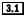

This reference describes every element in the DocBook DTD. Elements marked  are new in DocBook V3.1, which was released in February, 1999.
The description of each element in this reference is divided into the following sections:
Provides a quick synopsis of the element. The content of the synopsis table varies according to the nature of the element described, but may include any or all of the following sections:
Describes the content model of the element in SGML/XML DTD terms. See Section 1.1."
Lists "inclusions." Inclusions are an SGML feature. Included elements can appear anywhere inside the element that includes them, even in places that aren't ordinarily valid. For example, Chapter includes IndexTerm. This means that within a Chapter, IndexTerm can appear inside Emphasis, for instance, even though the content model of Emphasis does not explicitly allow IndexTerms.
Lists "exclusions." Exclusions are an SGML feature. Excluded elements cannot appear anywhere inside the element that excludes them, even in places that are ordinarily valid. For example, Footnote excludes Fotnote. This means that a Footnote cannot appear inside a Para inside a Footnote, even though Footnote appears in the content model of Para.
Lists elements that are excluded from appearing at any level below the element described.
Provides a synopsis of the attributes on the element. For brevity, common attributes are described only once, in this introduction.
Indicates if start- or end-tags may be omitted. Tag omission is dependent on both the DTD and your SGML declaration. If a tag is described as ommissable here, it is ommissible if your declaration allows tag omission. The standard DocBook declaration does not.
Lists the parameter entities in which the element described appears. Parameter entities are important when you are customizing the DTD.
Describes the semantics of the element in detail.
Summarizes specific formatting expectations of the element. Many processing expectations are influenced by attribute values. Be sure to consult the description of element attributes as well.
Identifies changes that are scheduled for future versions of the DTD. These changes are highlighted because they involve some backward-incompatability that may make currently valid DocBook documents no longer valid under the new version.
Describes the semantics of each attribute in detail.
Lists similar or related elements.
Provides examples of proper usage for the element. Generally, the smallest example required to reasonably demonstrate the element is used. In many cases, a formatted version of the example is also shown.
All of the examples printed in the book use the SGML version of DocBook. The CD-ROM includes the full text of all of the examples.
Formatted examples are indicated using a vertical bar.
Each element synopsis begins with a concise description of the elements it can contain. This description is in DTD "content model" syntax, with all parameter entities expanded.
Content models are the way that DTDs describe the name, number, and order of other elements that may be used inside an element. The primary feature of content model syntax is that it is concise, but this conciseness comes at the cost of legibility until you are familiar with the syntax.
There are six components to content model syntax: element names, keywords, repetitions, sequences, alternatives, and groups.
An element name in a content model indicates that an element of that type may (or must) occur at that position.
A content model of Para indicates that the element must contain a single paragraph.
There are two keywords that occur in the content models of DocBook elements: EMPTY, and #PCDATA.
A content model that consists of the single keyword EMPTY identifes an element as an empty element. Empty elements are not allowed to have any content. In order for the word "EMPTY" to have this special meaning, it must be the first and only word in the content model. The word "EMPTY" at any other place is treated as an element name.
The #PCDATA keyword indicates that text may occur at that position. The text may consist of entity references and any characters that are legal in the document character set. For XML documents, the document character set is always Unicode. In SGML the declaration can identify character sets and ranges that are allowed. DocBook SGML documents use the ISO Latin 1 character set.
An unadorned element name indicates that an element must occur exactly once at that position. A content model can also specify that an element may occur zero or more times, one or more times, or exactly zero or one time. This is accomplished by following the element name with one of the following characters: * for zero or more times, + for one or more times, or ? for exactly zero or one times.
A content model of Para+ indicates that the element must contain at least one paragraph and may contain many.
If element names in a content model are separated by commas, then they must occur in sequence.
A content model of Title, Para indicates that the element must contain a single title followed by a single paragraph.
If element names in a content model are separated by vertical bars (|), then they are alternatives. These are sometimes called "or groups" because they require the selection of one or another element.
A content model of Phrase | Para indicates that the element must contain either a single phrase or a single paragraph.
In SGML, there is another connector: the ampersand (&). The ampersand is a kind of combination of alternative and sequence, which means that all of the elements must occur, but they can occur in any order. DocBook does not have any content models that use the ampersand connector. XML does not allow it.
Finally, parenthesis may be used around part of a content model. A group formed this way can have repetition indicators and may occur as part of a sequence.
A content model of (Literal | Replaceable)+ indicates that either Literal or Replaceable must occur and they can be repeated (and mixed) any number of times.
A parser uses the content models to determine if a given document is valid. In order for a document to be valid, the content of every element in the document must "match" the content model for that element.
In practical terms, match means that it must be possible to expand the content model until it exactly matches the sequence of elements in the document.
For example, consider the content model of the Epigraph element: Attribution?, (FormalPara | Para | SimPara)+. This indicates that the following document fragment is valid:
<epigraph> <para>Some text</para> </epigraph>
It is valid because the following expansion of the content model exactly matches the actual content: choose zero occurances of Attribution, choose the alternative Para from the group, and choose to let the "+" match once.
By the same token, this example is not valid because there is no expansion of the content model that can match it:
<epigraph> <para>Some text</para> <attribution>John Doe</attribution> </epigraph>
There is one additional restriction on the matching ability of the parser: it is not allowed to "look ahead." This means that there are many useful content models that are ambiguous.
Ambiguity is not allowed. The parser must always be able to choose exactly what to match based upon the next input token. Consider the following content model: Meta*, Title?, Meta*.
The intent is clear: to allow some meta-information and a single, optional Title. But this content model is ambiguous for the following reason: if the document content begins with a Meta element, it is impossible to tell if it matches the Meta before the Title or after without looking ahead.
Ambiguous content models are detected by the parser when it reads the DTD. It is not sufficient that your document simply be unambiguous; it must not be possible to construct any ambiguous document.
The #PCDATA keyword can always match the empty string. This makes it impossible to force an element that may contain characters not to be empty. In other words, the following content model does not guarantee that the element is not empty: (#PCDATA)+.
In XML, the #PCDATA keyword is only allowed in optional, repeatable "or groups", and it must be the first member of the group.
The following attributes occur on all elements. They are summarized here once for brevity and to make the additional attributes that occur on many elements stand out.
Name | Type | Default |
|---|---|---|
| Arch | CDATA | None |
| Conformance | NMTOKENS | None |
| ID | ID | None/Requireda |
| Lang | CDATA | None |
| OS | CDATA | None |
| Remap | CDATA | None |
| Role | CDATA | None |
| Revision | CDATA | None |
| RevisionFlag | Enumerated: | None |
| UserLevel | CDATA | None |
| Vendor | CDATA | None |
| XrefLabel | CDATA | None |
| Notes: a. On a few elements, the ID is required, but on most it is not. | ||
Arch designates the computer or chip architecture to which the element applies.
Conformance indicates standards conformance characteristics of the item contained in the element. These characteristics are application-specific. DocBook provides no defaults.
ID is an identifying string for the element. It must be unique at least within the document and must begin with a letter.
Lang should be a language code drawn from ISO 639 (perhaps extended with a country code drawn from ISO 3166, as en_US). Use it when you need to signal your application to change hyphenation and other display characteristics.
OS indicates the operating system to which the element is applicable.
Remap contains an element name or similar semantic identifier assigned to the content in a previous markup scheme.
Role contains a string used to classify or subclassify an element.
While Role is a common attribute in the sense that it occurs on
almost all elements, it is not part of either of the common attributes
parameter entities (
Revision indicates the editorial revision to which the element belongs.
RevisionFlag indicates the revision status of element; the default is that the element hasn't been revised. RevisionFlag is intended only for simple revision management: to track the entire history of a document use a proper revision control system. Use RevisionFlag for indicating changes from one version to the next, no more.
UserLevel indicates the level of user experience to which element applies.
Vendor indicates the computer vendor to which the element applies.
XrefLabel holds text to be used when a cross reference (XRef) is made to the element.
SGML offers a small selection of attribute types. (XML offers a subset of these.) For convenience, a brief description of each of these types is provided here:
A string of characters.
A number. Numbers must begin with a hyphen or digit and can include the decimal point.
A sequence of name characters (letters, digits, hyphens, and periods). This differs from a CDATA attribute because it cannot contain spaces, punctuation, or other non-name characters.
A sequence of one or more space-delimited NMTOKEN values.
A sequence of number characters (digits, hyphens, and periods). This differs from a NUMBER field because it is not required to begin with a digit or a hyphen.
An entity name. The value of an ENTITY attribute must be the name of a declared entity.
A name. A name must begin with a letter and can consist of letters, digits, hyphens, and periods.
A sequence of one or more space-delimited NAME values.
An ID. IDs are names that must be globally unique within the document. The ID attribute declares the ID.
An single ID. IDs are names that must be globally unique within the document. The value of an IDREF attribute must be the name of an ID attribute defined in the document.
A sequence of one or more space-delimited ID values.
Copyright © 1999 O'Reilly & Associates, Inc. All rights reserved.